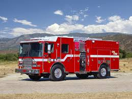
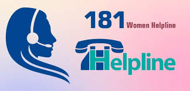
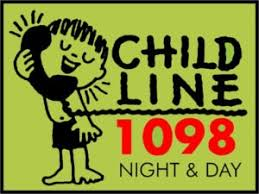

| Medical Emergency Helpline Number | ||
|---|---|---|
| Description : In India, medical emergencies require dialing 108 for free centralized ambulance services. While high traffic and rural distance can delay response times, major cities offer advanced private trauma care and growing air ambulance networks. Quick intervention is vital, and the "Good Samaritan Law" now protects bystanders who assist victims, encouraging faster community help before professional medics arrive. | ||
| Phone Number | 108 | |
| Email ID | helpdesk@emri.in | |
| Police Emergency Helpline Number | ||
|---|---|---|
| Description : The Police Emergency Helpline in India can be reached by dialing 112 for immediate assistance during crimes, accidents, or situations threatening public safety. This number connects callers to local police services for quick response. The integrated emergency response system ensures faster coordination between police control rooms and field officers to maintain law and order and protect citizens. | ||
| Phone Number | 100 | |
| Email ID | helpdesk@emri.in | |
| Fire Emergency Helpline Number | ||
|---|---|---|
|  |
Description : Fire emergencies in India are handled by dialing 101, which connects callers to the nearest fire and rescue services. Fire brigades respond to incidents such as building fires, industrial accidents, gas leaks, and rescue operations. Quick reporting helps minimize damage to life and property through timely firefighting and evacuation efforts. | |
| Phone Number | 101 | |
| Email ID | helpdesk@emri.in | |
| Woman Safety Helpline Number | ||
|---|---|---|
|  |
Description : The Women Safety Helpline 181 provides support to women facing harassment, domestic violence, abuse, or unsafe situations. This service offers immediate police assistance, counseling, and legal guidance. It aims to ensure women’s safety and empower them to report incidents without fear or hesitation. | |
| Phone Number | 181 | |
| Email ID | helpdesk@emri.in | |
| Child Safety Helpline Number | ||
|---|---|---|
|  |
Description : Childline 1098 is a 24×7 emergency helpline dedicated to children in distress. It assists children facing abuse, neglect, trafficking, child labor, or medical emergencies. The service connects children to protection officers, NGOs, and rehabilitation services to ensure their safety and well-being. | |
| Phone Number | 1098 | |
| Email ID | helpdesk@emri.in | |